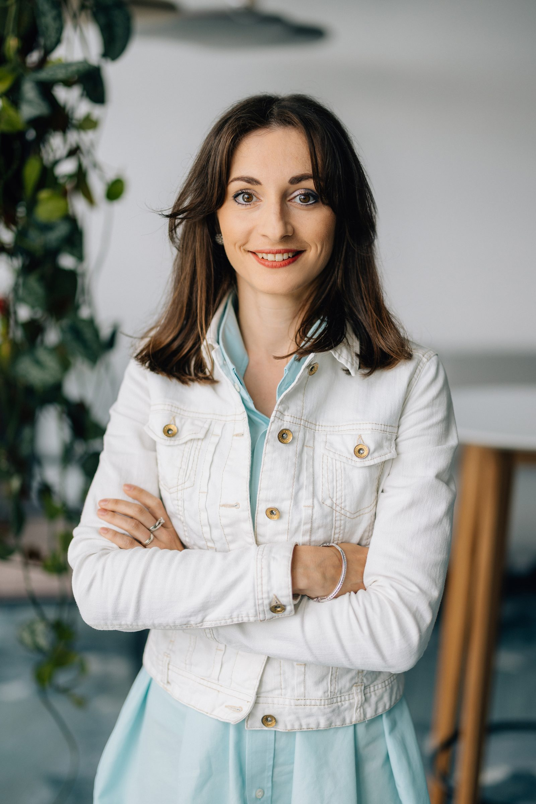

Viac ako 15 rokov pomáham značkám a agentúram plánovať, riadiť a vyhodnocovať mediálne kampane tak, aby dávali zmysel od stratégie až po faktúru — nielen v prezentácii pre klienta.

Som account managerka a mediálna strategička s praxou, ktorá pokrýva celý životný cyklus kampane – od plánovania cez implementáciu až po vyhodnotenie a reporting. Baví ma spájať dáta so zdravým úsudkom: dobré rozhodnutie v médiách nevzniká len z tabuľky, ale z pochopenia značky, cieľovej skupiny aj kontextu, v ktorom kampaň žije.
Počas svojej kariéry som spravovala mediálne kampane značiek ako Coca-Cola, H&M, DeLonghi, Honda, UPC, KIA či Voxberg. Mám skúsenosť rovnako s lokálnymi malými a rastúcimi značkami, ako aj s veľkými sieťovými klientmi — a viem, že každý z nich potrebuje iný prístup, aj keď rovnakú mieru profesionality a nasadenia.
Nehľadám len miesto v tíme — preberám zodpovednosť za výsledok kampane ako celku.
Tvorba mediálnych plánov pre online kampane postavených na analýzach, dátových podkladoch a poučení z predchádzajúcich kampaní.
Kompletná koordinácia mediálneho nákupu a realizácie schválených projektov naprieč Google Ads, Meta Business Manager, CM360, DV360 a Adform, s dátovou oporou v GA4, Gemius Direct Effect a Gemius Audience.
Analýzy výkonu kampaní a ich prezentácia klientovi v zrozumiteľnej forme — vrátane konkrétnych odporúčaní na ďalšie kroky.
Prvý kontakt, ktorý rieši požiadavky rýchlo a proaktívne. Budovanie vzťahu založeného na dôvere a odbornosti v digitálnej komunikácii.
Koordinácia s tímami stratégie, performance a buying, aj s partnerskými mediálnymi agentúrami — vždy s rovnakým štandardom servisu.
Martina je klíčová spojka pro naši agenturu v oblasti všeho, co se týká digitálu na Slovensku. Je jistotou toho, že průběh našich projektů jde vždy flexibilne, hladce a navyše s lidskostí.
Pokiaľ potrebujem objektívny a triezvy pohľad na mediálny trh, obraciam sa vždy na jedného človeka. Maťa má prehľad a názor, a preto ju vyhľadávam na konzultáciu viacerých mojich projektov.
Kampane na naše developmenty sú veľmi rôznorodé. Niekde ideme hlboko do dát, niekde potrebujeme helicopter view. Martina vždy vie reagovať a posunúť naše spoločné uvažovanie správnym smerom.
Ak hľadáte niekoho, kto vašej značke alebo agentúre prinesie poriadok, jasnú stratégiu a výsledky, ktoré sa dajú obhájiť pred vedením — ozvite sa mi.